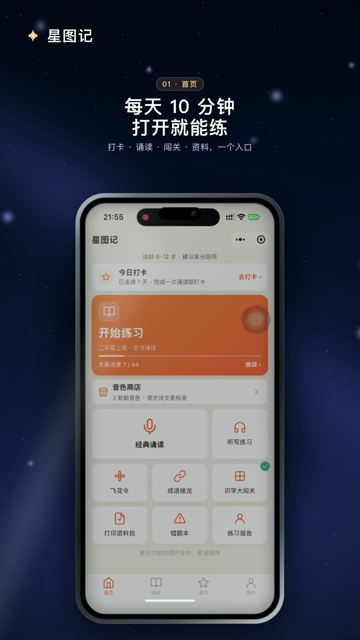
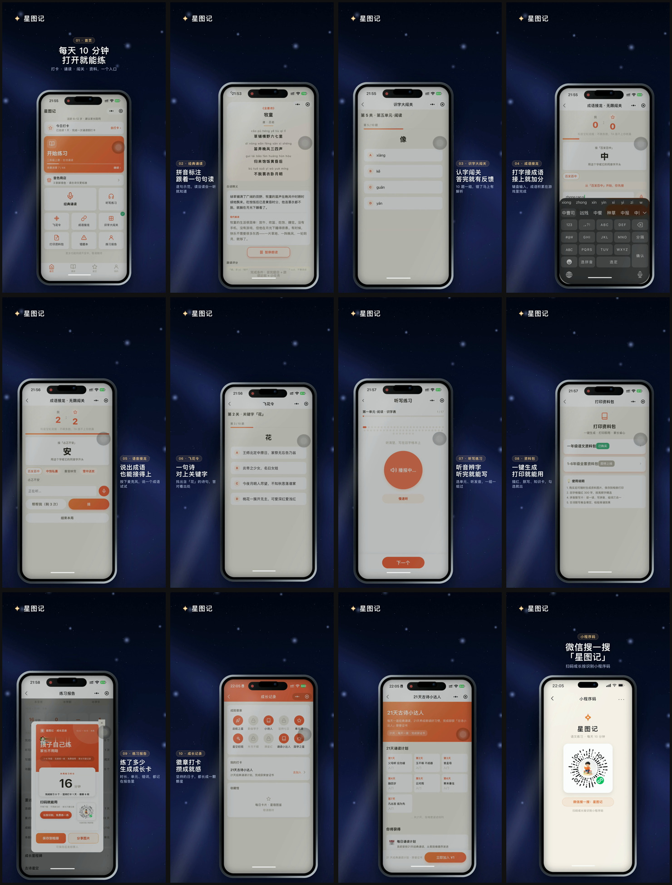

晚上十一点，我盯着星图记的首页看了很久。
功能都在。古诗诵读、识字闯关、成语接龙、飞花令、听写、打印资料、练习报告，一个入口挨着一个入口。
我知道自己做了什么。可要是有人第一次打开，问我一句“这东西到底是干嘛的”，我居然还得从头解释。
这事挺别扭的。
产品都已经上线了，有人用了，数据也开始有了，我还是没把它讲明白。
到 10 月 21 日，星图记后台累计用户已经超过 4,000。这是一个月里真实累积下来的使用数据，不是概念页上的演示数字。

我以为做出来就等于完成了
星图记最开始只是一个很小的想法。
孩子背古诗总得催，我想做一个能让他自己打开的东西。后来内容越加越多，功能也越加越多。
每加一个功能，我都觉得产品更完整了。
可首页也跟着越来越像一个工具箱。
对我这种天天在里面改东西的人来说，每个按钮都很熟。对第一次打开的人来说，十个功能就是十道题。
先看哪个，先点哪里，为什么留下，全都没答案。
我后来才意识到，做产品和介绍产品，不是同一件事。
产品解决“能不能用”。介绍解决“别人为什么要用”。
这两个问题，经常被混在一起。
我第一次把功能删掉了
做那支 40 秒演示片的时候，我第一版想全放进去。
十个功能，一个不落。每个都值得讲，每个都是我自己做出来的，删掉哪个都舍不得。
结果第一版看起来很满，却没有重点。
素材还串了页。首页片段尾部混进了后面的操作，听写片段结束又跳回首页。低分辨率下看不出来，放大逐帧检查才发现。
那一刻我才同意做减法。
最后留下来的不再是“我做了什么功能”，而是“每天 10 分钟，打开就能练”。
前面先用这句话立住。后面才用真机画面证明：古诗能读，生字能练，错题有反馈，数据能看见。
同样的产品，只换了一条讲法，看起来就不一样了。

一条视频救不了发布
片子做完以后，我又碰上一个问题。
视频能发，文章还在讲另一套。朋友圈写的是功能更新，视频说的是每天十分钟，官网首屏又像产品说明书。
每个入口单看都不差，放在一起却不像同一个产品。
后来我把顺序改了。
先写一句产品承诺。
再准备三个能证明这句话的事实。
然后把事实分给视频、文章、首屏和短内容。每一边说不同的话，但都往同一个方向走。
这时候，发布才不再只是“发一条视频”。
它更像给产品第一次见人时准备好的整套衣服。
我发现最难的不是做素材
现在做视频的工具很多，做图、配音、写文章也都有工具。
真正难的是，做的人舍不得删。
自己知道功能怎么来的，知道每个细节花了多少时间，就会本能地想全部讲出来。
但用户没有义务理解你的过程。
他只看一眼，只想知道这跟自己有没有关系。
所以我现在会先问三个问题：
这东西替谁解决了什么麻烦？
第一次打开的人，能在几秒内明白吗？
如果他愿意继续看，下一个证据是什么？
这三个问题答不出来，再加功能也补不上。
我准备接三个真实产品
这段时间我发现，卡在“做出来了，但不会讲”的人不少。
有的是独立开发者，产品已经很完整，官网还像一份说明书。有的是做 AI 工具的小团队，功能一直加，发布素材永远攒不齐。也有人和我一样，白天上班，晚上自己折腾，东西做上线以后就不知道下一步怎么让别人看见。
我准备把这件事做成一个发布包。
7 个工作日，做一次产品访谈，做出 45 秒主片、3 条竖版切条、一篇发布文章和一套首屏文案。
不是替人开发产品，也不保证流量和成交。我做的是先把产品讲明白，让每个入口说同一件事。
首批只接 3 个。
这次先不接需要招标、供应商入库和长流程审批的大公司，只接自己能拍板的小产品作者。
如果你也经历过那种“东西明明做出来了，别人却没看懂”的瞬间，可以来聊聊。
我是平野先生，关注我，分享真实的使用体验和踩坑记录。